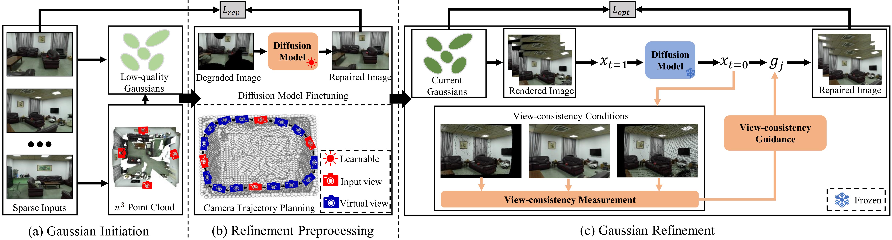

Method Overview

Step 1: We input a sparse set of (e.g., 4) unposed images into a feed-forward visual geometry reconstruction model π3 to estimate camera poses and reconstruct a point cloud, which are then used to obtain an initial set of low-quality 3D Gaussians.
Step 2: We create a specialized diffusion model by finetuning a pretrained diffusion model on the input and corresponding degraded images. Besides, we design a camera trajectory planning scheme to obtain a camera trajectory that covers the whole scene.
Step 3: We repair the Gaussian-rendered images at the planned camera trajectory, and use the repaired images to optimize Gaussians for Gaussian refinement. As the repaired images still have conflicts across different views, which cannot be directly used to generate high-quality Gaussians, we propose a training-free view-consistency conditioned sampling process in the diffusion model for Gaussian refinement.
Abstract
We introduce S2C-3D, a novel sparse-view 3D reconstruction framework for high-fidelity and complete scene reconstruction from as few as six to eight images. Our framework features three components: a specialized diffusion model for scene-specific image restoration, a training-free view-consistency conditioned sampling process in the diffusion model for refined Gaussian optimization, and a camera trajectory planning scheme to ensure comprehensive scene coverage. The specialized diffusion model is developed by finetuning a pretrained architecture on the input views and their corresponding degraded counterparts. The adaptation to the scene distribution allows the model to repair Gaussian renderings while effectively eliminating domain gaps. Meanwhile, the trajectory planning scheme optimizes scene coverage by connecting each newly sampled camera to its two nearest neighbors. By iteratively constructing paths and retaining only those that significantly enhance visibility, the scheme establishes a trajectory that covers the entire scene. To address multi-view conflicts, the view-consistency conditioned sampling process quantifies the consistency between neighboring repaired images. This information is injected as a condition into the sampling process of the frozen diffusion model, facilitating the generation of view-consistent images without additional training. Consequently, our approach produces high-fidelity 3D Gaussians that are robust to artifacts. Experimental results demonstrate that S2C-3D outperforms state-of-the-art methods, constructing high-quality scenes that are free from missing regions, blurring, or other artifacts with very sparse inputs.
More Qualitative Results
BibTeX
@inproceedings{shen2026sparse,
title={Sparse-to-Complete: From Sparse Image Captures to Complete 3D Scenes},
author={Shen, Yiyang and Yang, Yin and Zhou, Kun and Shao, Tianjia},
booktitle={Proceedings of the Special Interest Group on Computer Graphics and Interactive Techniques Conference Conference Papers},
pages={1--11},
year={2026}
}